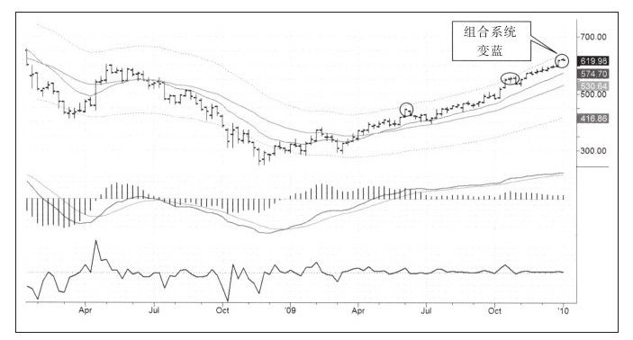
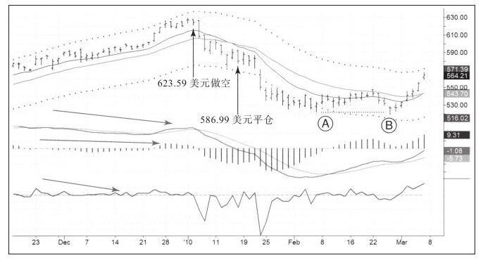

股票市场2009年3月见底，在一波波澜壮阔的向上反转之后开始缓慢上升。到2009年年底的时候，毫无疑问我们已经处在牛市之中了。
牛市通常会持续4年多时间，但不会直线上涨。经典技术分析的鼻祖查尔斯·道和罗伯特·雷亚曾说过经典牛市的三个阶段：
·第一阶段，前一个熊市造成超跌低价的股票恢复性上涨。
·第二阶段，反映实体经济增长的股价上涨。
·第三阶段，在前两个阶段的基础上投机盛行，市场即将跳入下一次熊市。
这些阶段之间的转换不会非常平坦，恰恰相反，牛市中这些典型的阶段转换时通常都会被调整所打断。
2009年年底时我们处于哪个阶段呢？当然不是令人兴奋的第三阶段，也不是第二阶段，因为实体经济仍然在低潮期，我们在第一阶段，也就是低价恢复阶段。由于第一阶段已经持续了9个月之久，另外NH-NL指标走势趋弱，所以猜想市场出现短暂的回调是合理的。
谷歌是本轮牛市的领导者，如图10-9所示，它在整个熊市中相对强势，2009年3月的时候市场多数股票创出新低，但谷歌依然在2008年的底部之上运行良好。这表明这只股票很有可能成为新的上涨行情的领导者。但是，即便是领导者也需要休息。图10-9显示只要谷歌到达上轨线，就变得步履蹒跚，需要短暂休整几周才开始继续上涨。

本图右侧超买信号再次出现，周线组合系统变蓝，变蓝意味着允许交易者做空。
在此处做空的勇气来自几个方面，其中之一是技术分析结果。2009年11月，谷歌表现得非常强势，创出当年新高；另外，周线组合系统由绿变蓝，日线图中多个指标走出大量的顶背离走势，股价表现出相对低风险的做空机会（见图10-10）。

图中向上垂直箭头标注的是11月31日，也是我做空的那一天，当天日线组合系统由绿变蓝，我在价值之上做空，并把止损设在前一天高点附近。谷歌随后跌到下轨附近，我在那里平掉了空单，获得了64%的通道宽度评分。
股价短暂停留后再度下跌，但已经和我没什么关系了。我已经抓住了我想要的利润，并且一旦股价达到下轨线，我的系统也不再允许我做空。如果你准备和你的系统结伴而行，相信你的系统很重要。
请注意2010年2月的向上反转，A点时，股价跌到了522.46美元，B点创出520美元的新低，但收盘价在526.43美元。这是一次假突破，最好的见底信号之一！看这幅图，你能识别当时MACD和强力指标给出的信息吗？
在结束本章之前，我们一起看看我的交易日记中的另一个交易案例，它将是本书的最后一个案例。